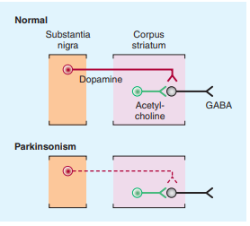
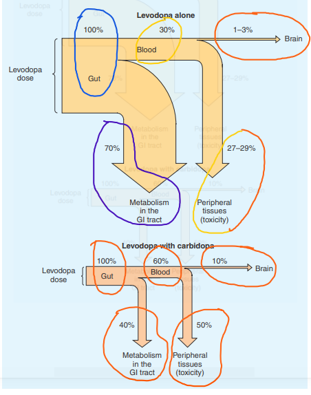
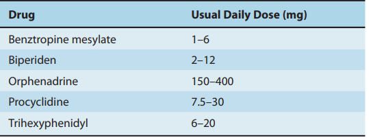

→ Tremor
- rythmic oscillatory movement around a joint and is best characterized by its relation to activity.
- Parkinsonism [rigidity/impairment of voluntary activity]
- sustained posture [ postural tremor ]
- during movemnt [ intention tremor ] — [lession of the brainstream/cerebellum]
- irregular , unpredictable , involuntary muscle jerks that occur in different parts of the body → impair voluntary activity
- proximal muscsles of the limb mostly affected
- slow and wirthing movement
- sustained abnormal postures (dystonia) — [perinatal brain damage] — [ from acute complication of certain drugs,diverse neurologic disorder,inhereted phenomenon ]
1.Parkinsonism
→ characterized by a combination of :
- rigidity
- bradykinesia
- tremor
- postural instability
→ non-motor symptoms
- affective disorders
- personality changes
- abnormalities in autonomic functions (sphincter,sexual functions,sweating)
- sleep disorders
- sensory complains or pains
1.1.pathogenesis
→ related in combination of :
- impaired degradation of proteins
- intracellular protein accumulation
- aggregation
- oxidative stress
- mitochondrial damage
- inflammatory cascades
- apoptosis
- genetic factors are important (under age of 50)
- which is now recognized as synucleinopathy
(Stage 3) — substania nigra
(Stage 4) — mesocortex and thalamus
(Stage 5) — entire neocortex
- motor features develop at stage 3
→ normally high concentration of dopamine in the basal ganglia of the brain
- is reduced in parkinsonism
- restore dopaminergic activity with levodopa and dopamine agonist allevite many of the motor features of the disorder.
→ normally inhibition of GABAergic cells in the corpus striatium is LOST.
→ drugs induced parkinson :
- dopamine receptor agonist (antipsycotics)
- 1-methyl-4-phenyl-1-,2,3,6-tetrahydropyridine [MPTP]
- various other neurotranmitters such as norepinephrine has uncertain clinical relevance.
- 
2.LEVODOPA
→ does not cross the blood-brain barrier
- no effect if given into peripheral circulation
- immediate meatbolic prescusor of dopamine
- does enter brain → decarboxylated in dopamine.
- D1 type → in the pars of compacta of the substania nigra
- D2 type → on striatal neurons
→ benifit of dopaminergic antipakrinsonism drug appear to depend mostly in the stimulation of D2 receptor.
- D3 type → of newer drugs
- lergotrile & bromocriptine
→ Dopa is the amino acid prescursor of dopamine and norepinephrine
- Levodopa is the levorotary stereoismoer of dopa.
Chemistry Chapter 6 file:///C:/Users/nksse/OneDrive/Documents/MEGAsync/state+thesis/StateExams/Pharmacognsoy/E-books/katzung-pharmacology.pdf
2.1 pharmacokinetics:
→ rapidly absorbed from the small intenstine
- absortption depends on — rate of gastric acid emptying — pH of gastric content
→ plasma conc. peak : 1 & 2 hours after an oral dose
→ plasma half-life: 1-3 hours
→ 2/3 of the dose appear in urine as metabolite [within 8 hours after admin.]
→ main metabolic products:
- 3-methoxy-4-hydroxyphenyl acetic acid [HVA-hamovalinic acid]
- dihydroxyphenylacetic acid [DOPAC]
- remainder metabolized extracerebrally → by "decarboxylation" to dopamine [which does not penetrate blood-barrier]
→ in combination must be given with :
- dopa decarboxylase inhibitors [that does not penatrate brain]
- peripheral metabolism : reduced
- plasma level : are higher
- plasa half-life : longer → dopa is available to entry into the brain
- reduce peripheral conversion to dopamine.
2.3 clinical use
→ best results in the first few years of treatment
- cuz daily dose must be reduced over time to avoid adverse effects.
- loss of dopaminergic nigrostriatal nerve terminals
- pathologic process of striatal dopamine receptors.
→ levodopa does not stop the progression of parkinsonism.
- but lowers the mortality rate
- e.g.// carbidopa : 25mg & levodopa : 100mg / 3 times per day and gradually increased
- 30-60min before meals
- when possible to use a dopamine agonist instead to reduse risk of flacuations.
- (10/100 , 25/100 , 25/250 ) — Parcopa — that disitegrates in the mouth and swallowed → 1 hours before meal
- — Stalevo — carbidopa + levodopa + catehol-O-mehtyltranferase inhibitor [entacapone]
→ ameliorate all the clinical features of parkinson
- relieving bradikinesia and any disabilities resulting from it.
- 
2.4 Adverse effects
A.Gastrointesntinal Effects:
→ without peripheral decarboxylase inhibitors:
- anorexia
- nausea
- vomiting in occur about 80
→ antacids taken with 30-60min before levodopa may also be benificial.
- chemoreceptor trigger zone located in the brainstream
- antiemetics such as phenothiazines may be admin.
→ cardiac arrythmias
- tachycardia
- ventricular extrasystoles
- rarely artial fibrilation → [due to increase catecholamine formation peripherilly]
C.Behavioral Effects:
→ variety of adverse metnal effect:
- depression
- anxiety
- agitation
- insomnia
- somnolence
- confusion
- other changes in mood/presonality
- cloazapine , olanzapine , resperidone used to counteract such behavioral complications.
→ dyskinesia occur is up to 80%
- choreoathetosis of the face and distal extremities is the most common presentation.
- relate to the timing of levodopa intake (wearing-off/end-of-dose akinesia)
- unrelated to the timing. ( on-off phenomenon)
- off-periods of akinesia alternate over the course of a few hours with on-periods of improved mobility.
E.Mydriasis
→ actue glaucoma.
2.5 Drug Holidays
→ discontinuance of the drug for 3-21 days
- may temprorarily improve responsiveness to levodopa
- alleviate some of its adverse effects
- little help to in the managment of the on-off phenomenon.
2.6Drug Interactions:
→pyridoxine (vitamin B6) enchance the extracerebral metabolism of levodopa
- may prevent therapeutic effect → [unless a peripheral decarboxylase inhibitor is also taken ]
- taking monoamine oxidase A inhibitors or within 2 weeks of discontinuation. → can lead to hypertensive crises.
2.7 Contraindication
→ SHOULD NOT be given to psychotic patients → exacerbate the mental distribance
→ angle closure/chronic open glaucoma
→ active peptic ulcer → git bleeding has been reported with levodopa
→ history of melanoma / undiagnosed skin lessions → levo is a prescusor of skin melanin
3.DOPAMINE RECEPTOR AGONIST
→ acting directly on dopamine receptor.
→ they do not require enzymatic conversion to an active metabolite.
→ no potentially toxic metab.
→ do not compete with other substances for active transport into the blood/blood-brain barrier.
→ number of dopamine agonist have antiparkinsonism activity
- first-line therapy for Parkinson's disease
- lower incidence of the response fluctuations + dyskinesia that occur with long-term levodopa therapy.
- low dose of carbudipa & levodopa as introduction and a dopamine agonist is then added.
→or on patients with parkinsomism with
- end-of-dose akinesia
- on-off phenomenon
- become resistance on treatment with levodopa [dissapointed in patients which failed to repsonsd in levo treatment]
3.1BROMOCRIPTINE
→ d2 agonist;
→ widely to treat Parkinson's disease in the past
- superseded by the newer dopamine agonist.
3.2PERGOLIDE
→an other ergot derivative
- directly stimulates both D1 & D2 receptors.
- associated with the develeopment of valvular heart disease.
3.3PRAMIPEXOLE
→is not ergot derivative
→ but has preferential affinity for the D3 family of receptors
→ effective as monotherapy for mild parkinsonism
→ may ameliorate affective symptoms
→ neuroprotective effect:
- by it's ability to scavenge hydrogen peroxide and enhance neurotropic activity in mesencephalic dopaminergic cell cutlures.
→ peak conc. : 2 hours
→ excreted largerly in urine
→ 0.125 mg / 3 times a day → doubled after 1 week → again after another week
→ further increasement in the daily dose are by 0.75mg at weekly intervals [depending on response/tolerance]
→ extended-release formulation preparation is now available and is taken once a day at a dose equivalent to the total daily dose of standar pramipexole.
3.4ROPINIROLE
→ not an ergot derivative
→ pure D2-receptor agonist
→ effective monotherapy against mild-disease
- smoothing response to levodopa
- response to fluctuation
→ dosage between 2mg and 8 mg times daily is necessary
→ CYP1A2
→ prolonged-release preparation taken once daily is now available.
3.5ROTIGOTINE
→ skin patch
→ '07 by FDA for :
- early parkinson's diseae
→ similar adr with the other agonist
- applicaiton site
3.6 Adverse Effects of Dopamine Agonist
A.GIT EFFECTS
→ anorexia , nausea , vomiting may occur
- can be minimized with food
→ bleeding from peptic ulceration
B.Cardiovasular Effects
→ postural hypotension (with inhalation therapy)
→ cardiac arrythmias (indication for the discont. of the treatment)
→ cardiac valvulopathy may occur with pergolide.
C.Dyskinesia
→ abnormal movements (similar to levodopa) → reversed by reducing the total dose
D.Mental Distrubances
→ confusion , hallugination , delusion , psyciatric reactions
E.Miscellaneous
→ headache , nasal congestion ,pulmonary infilitrates , fibrosis and other
3.7 Contraindication
→ patients with history of :
- psychotic illness
- recent myocardial infranctions
- active peptic ulceration
- peripheral vascular disease.
4.MONOAMINE OXIDASE INHIBITORS
→monoamine oxidase A metabolizes norepinephrine , serotonin , dopamine
→ monoamine oxidase B metabolizes dopamine selectively
4.1 SELEGILINE (deprenyl)
→ selective irrevesrsible inhibitor of monoamine oxidase B at normal doses
- at higher doses it inhibits monoamine oxidase A as well
- enhance and prolongs the antiparkinsonism effect of levodopa
- reduce mild on-off wearing off phenomena.
→ daily dosage : 5mg with breakfast & 5 mg with lunch.
→ minor therapeutic effects on parkinsonism when given alone
4.2 RASAGILINE
→ monoamine oxidase B inhibitor
- more potent than Selegiline in preventing MPTP-induced parkinson
- is being used for early symptomataic treatment
→ adjunctive therapy at a dosage of 0.5 or 1 mg/d to prolong effects of levo-carbidopa in patients with advanced disease.
→ should be taken by patients receiving
- meperidine
- tramadol
- methadone
- propoxyphene
- cyclobenzaprine
- St.John's wort
- antitussive → dextromethorphan should also be avoided by patients taken monoamine oxidase B inhibitors.
5.CATECHOL-0-METHYLTRANFERASE INHIBITORS
→ inhibition of dopoa decarboxylase is associated with activation of other pathways of levodopa metabolism
- catechol-0-methyltranferase(COMT) → increases plasma levels of 3-O-methyldopa
- "Tolcapone" and " Entacapone " → prolong the action of levodopa by dishmising in peripheral metabolism
- levodopa clearance is decreased and so bioavailbility increased.
- rapidly absorbed
- bound to plasma proteins
- metabolized before excretion
- central + peripheral effects
- half-life 2 hours
- dosage : 100mg / three times daily
- dosage 200mg needs to be taken with each dose of levodopa x 5 times/day
- dyskinesia, nausea , confusion
- diarhhea , abdominal pain , orthostatic hypotention , sleep distrubances , orange discoloration of the urine.
- acute hepatic failure
- levodopa + carbidopa + entacapone
- 3 preps. — Stalevo50(50+12.4+200)
— Stalevo 150 (150+37.5+200)
6.APOMORPHINE
→ subcutaneous injenction of apomorphine hydrochloride "Apokyn"
- potent dopamine agonist
- effective relief (rescue) of off-periods of akinesia
- rapidly taken up in the blood → brain.
7.AMANTADINE
→ anti-viral agent
→ moa in parkinsonism is unclear.
→ but may potentiate dopaminergic function by influencing the synthesis, release , reuptake of dopamine.
→ antagonize effects of adenosine at adenosine A2a receptors
- which are receptors that may inhibit D2-receptor function
7.1Pharmacokinetics
→ peak plasma conc : 1-4hours [oral dose]
→ plasma half-life [2 and 4 hours ]
→ excreted unchanged in the urine.
7.2Clinical Use
→ less efficacious than levodopa
→ short-lived often dissapeariing after only a few weeks of treatment.
→ standard dosage: 100mg orally 2 or 3 times / day
→ may also help in reducing iatrogenic dyskinesia.
7.3 Adverse Effects:
→ central nerbous system effects:
- which can be reserved by stopping the drug
- restlessness
- depression
- irritability
- insomnia
- agitation
- ecitement
- hallucination
- confusion
- acute toxic psychosis
- convulsions
→ headeache , heart failure , postural hypotention , urinary retention , GIT distrubances
→ should be used with caution in patients with a history of seizures / heart failure
8.ACETYLCHOLINE-BLOCKING DRUGS
→ centrally acting antimuscarinic preparations
- differ in their potency and their efficasy in different patients.
- tremor and rigidity of parkinsonism
- little effect on bradykinesia
- 
8.1 Clinical Use
→ started with a low dose → gradually increased until benifits occurs or adr limit further increments.
8.2Adverse Effects
→ central nervous system and peripheral effects
- poorly tolarated by elderly
- gradually rather than abruptly to prevent acute excerbation of parkinsonism.
{kind=link}
{kind=link}
{kind=link}
{kind=link}
{kind=link}